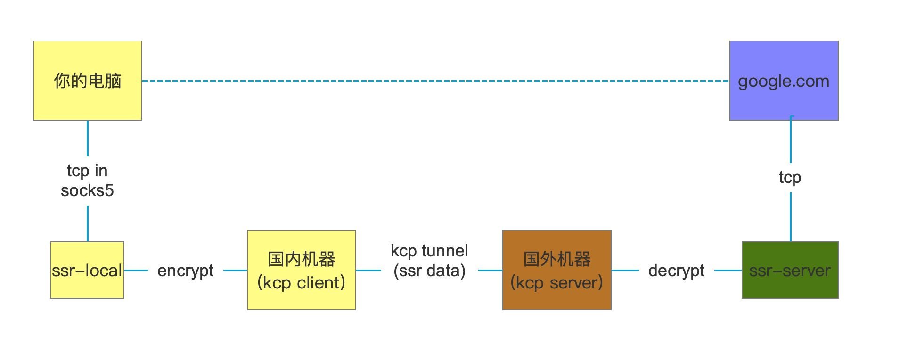

shadowsocksr + kcptun
shadowsocksr/ssr https://github.com/shadowsocksrr/shadowsocksr 是在ss基础上增加了流量混淆 ssr的客户端(ssr-local)我们都有叫做ShadowsocksX-NG-R8
kcptun https://github.com/xtaci/kcptun 也有加密功能，但是主要还是考虑加速广域网的传输速度

部署上有好几种选择：
- 不使用kcptun. 这样可以节省国内机器，但是广域网尤其是跨境传输丢包很严重，影响传输速度。ssr就没有考虑这方面问题。
- ssr-local和kcp client都在本地，优点是不需要国内机器，缺点在于需要在本地跑两个服务。但是如果国外机器挂了的话，那么本地配置也要改。
- 上图好处是，因为国内机器不会被封，所以本地配置永远是固定的。即便是国外机器换了，也只需要改国内机器的kcp配置。
启动方式如下：
- 本地启动ss-local配置可以参考 ssr-local-config.json
- 国内机器启动 ./kcptun_client_linux_amd64 -c kcptun-ssr-config.json
- 国外机器启动 ./kcptun_server_linux_amd64 -c kcptun-ssr-config.json
- 国外机器启动 ssr-server -c ssr-server-config.json